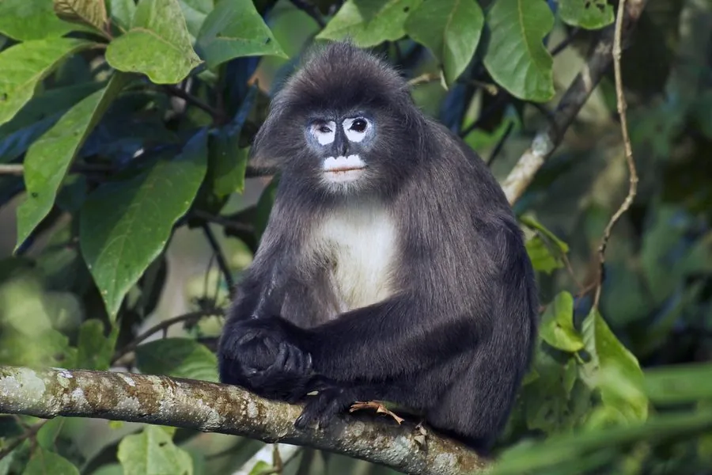

哺乳动物 · 动物界
菲氏叶猴 Trachypithecus phayrei

中国云南及中南半岛的深灰色叶猴，眼周与口周有一圈白毛，初生幼仔橙黄色，栖于喀斯特山地常绿林，种群日趋濒危。
- 分类
- 门脊索动物门纲哺乳纲目灵长目科猴科属乌叶猴属
- 栖息环境
- 热带、亚热带常绿阔叶林与喀斯特山地森林，多在河谷两侧的陡坡
- 地理分布
- 中国云南，以及缅甸、泰国、老挝、越南和印度东北部
- 保护级别
- IUCN 濒危（EN）；中国国家一级保护动物
物种志
菲氏叶猴体长 42–60 cm，尾长 70–85 cm，体重约 5–8 kg。全身毛色深灰至近黑，眼周和口周有一圈醒目的白色短毛，头顶毛冠略向前伸，四肢细长，尾长而直；初生幼仔毛色金黄橙红，与成体形成鲜明对比。
它们栖息于中国云南以及缅甸、泰国、老挝、越南和印度东北部的热带、亚热带常绿阔叶林，多在海拔 500–2000 米的喀斯特山地活动。群体约 5–20 只，以树叶、嫩芽、花和果实为食，清晨和傍晚最活跃。妊娠期约 6 个月，每胎一仔；栖息地丧失和盗猎使其种群持续下降，被列为濒危物种。
形态与习性
- 食性树叶、嫩芽、花与果实
- 体长42–60 cm，尾长 70–85 cm
- 体重约 5–8 kg
- 寿命约 20 年
- 繁殖妊娠期约 6 个月，每胎一仔
- 幼仔初生时全身橙黄色，数月后渐变为深灰
趣味知识
- 菲氏叶猴的幼仔出生时是鲜艳的橙黄色，在深色群体中十分显眼。
- 它们眼周和口周的白毛形成一圈明显的浅色环，是识别本种的重要特征。
- 云南的喀斯特石山森林是它们的重要栖息地，种群数量估计不足数千只。